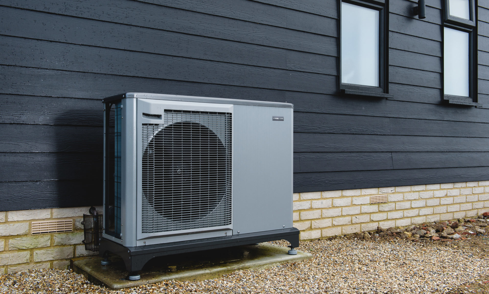

Pompa ciepła dla ciebie i twojej firmy
To pompa ciepła – jedno urządzenie, które spełnia aż 3 funkcje: ogrzewa pomieszczenia, klimatyzuje je oraz podgrzewa wodę użytkową. Dlatego, jeśli zależy Ci na nowoczesnej i ekologicznej formie systemu grzewczego, która dodatkowo pozwoli Ci zaoszczędzić pieniądze, to jesteś w dobrym miejscu.
Dofinansowanie do 37000 zł
Dofinansowanie wymiany starych i nieefektywnych źródeł ciepła na
paliwo stałe na nowoczesne źródła ciepła spełniające najwyższe
normy, oraz przeprowadzenia niezbędnych prac
termomodernizacyjnych budynku.
Dotacja może wynosić do 30000 zł dla podstawowego poziomu
dofinansowania i 37000 zł dla podwyższonego poziomu
dofinansowania.
Dowiedz się więcej o zasadach projektu
Czyste Powietrze
już teraz.
Dlaczego warto rozważyć ogrzewanie pompą ciepła?
- Niższe koszty budowy domu - wybierając pompę ciepła nie potrzebujemy budować komina, magazynu opału itp.
- Nie musimy tracić czasu na szukanie paliwa o dobrej jakości za przystępną cenę - przy niektórych źródłach ciepła jest to zasadnicza kwestia wpływająca na trwałość kotła, jego awaryjność i koszt ogrzewania
- Jest jednym z najtańszych w eksploatacji źródeł ciepła i nie wymaga uciążliwej obsługi - obsługa pompy ciepła i instalacji grzewczej sprowadza się jedynie do odpowiednich ustawień regulatora i dostosowania pracy instalacji do indywidualnych potrzeb użytkowników
- Szybki zwrot poniesionych nakładów inwestycyjnych - realny czas zwrotu inwestycji wynosi 2 do 5 lat, w stosunku do kotłowni na olej opałowy, gaz płynny czy ogrzewania elektrycznego (grzejniki elektryczne)
- Długa żywotność pompy ciepła - nawet do 20 lat
- Pompa ciepła jest przyjazna dla środowiska naturalnego – łatwo można uzyskać niskooprocentowany kredyt na inwestycję proekologiczną. Mimo że pompa ciepła zasilana jest energią elektryczną, która w Polsce wytwarzana jest głównie ze spalania węgla. Jednak, aby uzyskać 1 kW ciepła z pompy ciepła trzeba spalić znacznie mniej węgla niż dla 1 kW z kotła/pieca elektrycznego lub, mniej niż w kotle węglowym. Elektrownie wyposażone są w instalacje odsiarczania i odpylania spalin dzięki czemu w większym stopniu dbają o środowisko
- Udział energii elektrycznej pochodzącej z biopaliw, energii słonecznej i wiatru systematycznie wzrasta - w przyszłości pompy ciepła będą zasilane wyłącznie energią elektryczną z odnawialnych źródeł energii tzw. "zielonym prądem"
- Pompa ciepła może być jedynym źródłem ciepła do ogrzewania budynku, może również współpracować z dodatkowymi źródłami – łatwo można podłączyć do instalacji np. kolektory słoneczne czy kominek z płaszczem wodnym, może również współpracować z kotłem gazowym, olejowym lub na paliwo stałe
- Pompa ciepła oprócz ogrzewania może również chłodzić pomieszczenia w lecie podnosząc komfort w budynku
Popularność pomp ciepła wynika z ich wysokiej efektywności, ale i rosnących oczekiwań właścicieli budynków względem komfortu cieplnego. Wykorzystując odnawialne źródła energii, stanowią także najbardziej naturalne źródło ciepła. Coraz lepsze parametry techniczne i tania eksploatacja tych urządzeń, zwłaszcza w połączeniu z odpowiednio dobraną instalacją fotowoltaiczną to najlepsze rozwiązanie dla oszczędnych.